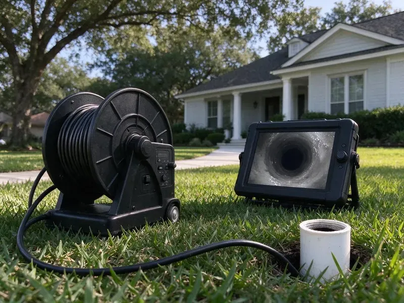

Sewer Line Replacement in Harrisburg, SD
Sewer replacement in Harrisburg, SD with written options for trenchless and open-trench work from HWR Plumbing.
- Pipe Bursting Offered
- We Pull the Permits
- Camera Footage Before Any Quote
- Insured Crews

Ready to Fix the Sewer for Good in Harrisburg, SD?
We handle the dig or the burst, the permit, the inspection and the yard restoration.
Sewer Pipe Replacement for Harrisburg, SD Homes
HWR Plumbing takes a sewer job from the first camera run in Harrisburg, SD to the final inspection sign-off. We handle the dig or the burst, set the new pipe at proper fall, and add a two-way cleanout at the house so the next service call is easy. Inspector signs, we backfill. The yard gets compacted and raked out.
Work we handle every week:
- Trenched installs on compacted bedding at correct fall
- Spot Repairs When the Remaining Pipe Is Sound
- Permitted Installs to Local Code

Additional Drain Services Services in Harrisburg, SD
From stubborn kitchen clogs to main sewer backups, our drain services in Harrisburg, SD restore full flow fast and keep it that way.


Customers
Why Choose HWR Plumbing for Sewer Line Replacement in Harrisburg, SD?
Our crew covers locates, permits, the install, inspection and backfill. One phone number. We do not hand the digging off to a company you have never heard of.
- Inspected Work, Every replacement is permitted and passes the local plumbing inspection.
- Pipe That Lasts, We install PVC and HDPE made for underground use in South Dakota conditions.
- Less Digging, Pinpointing the break means smaller holes when a spot repair will do.
Citywide Coverage
Plumbing infrastructure varies block to block in Harrisburg. One street might tie in at the front with a shallow tap, and the next might run out the back to an easement main ten feet down. Locating settles it. The route gets confirmed before the estimate.
Experienced Team
When our crew arrives at your Harrisburg, SD home, the lead plumber walks the line with you first. The lead walks you through pit spots, the dirt pile and truck parking before work begins. Questions are welcome. Ask him anything.
Safety-First Approach
Before we dig, every buried utility gets marked. We request locates, wait for all the paint, and hand-dig near marked lines. Gas is the big one.
Trusted Certified Harrisburg Plumbing Services Professionals
At HWR Plumbing, we are proud to offer certified plumbing services throughout Harrisburg, SD. Credentials matter in this trade. Every repair, install and maintenance visit follows strict safety and quality rules, and the plumbers doing the work carry recognized industry credentials.
Call Us Now PHCC Plumbing Contractor Recognition
PHCC Plumbing Contractor Recognition Better Business Bureau (BBB) Accreditation
Better Business Bureau (BBB) Accreditation Angi Certified Pro
Angi Certified Pro ISO 9001 Quality Management Certification
ISO 9001 Quality Management CertificationRebuilding Old Sewer Lines in Harrisburg, SD
Keeping a New Sewer Line Healthy in Harrisburg
New pipe still needs a little care. Plant thirsty trees away from the line, since big roots can push on even a sound pipe. Soils in South Dakota range from glacial deposits in the east to clay rich ground farther west that swells when wet and shrinks when dry. Flushable wipes still clog. A camera check every few years on an older house catches problems at the city tap or the cleanout early.

Spot Sewer Repairs in Harrisburg, SD
Sometimes one joint is the whole problem. If the camera shows a single offset or a cracked section and the rest of the line is round and clean, we dig one small hole at the marked depth and replace that piece with PVC and shielded couplings. Far cheaper than a full run. You see the footage that supports the call.
Clay and Orangeburg Sewer Replacement in Harrisburg, SD
Orangeburg is tar-soaked wood fiber. Many mid-century houses got it, and by now most of it has blistered and flattened enough to snag waste. Clay holds up better, except at the joints. Several bad spots on one run usually make full replacement the better buy.
Pipe Bursting Under Driveways in Harrisburg, SD
Concrete is expensive to replace. Bursting lets us run new HDPE under a driveway, patio or mature tree by pulling it through the path of the old pipe from a launch pit to a receiving pit. We fuse the HDPE into one continuous length on the lawn. A typical burst takes one working day. Restoration is two small holes instead of a sawcut slab.
Commercial Sewer Line Replacement in Harrisburg
Restaurants and strip centers cannot close for a week. Commercial jobs get scheduled around your hours, with the equipment staged early and the work often done overnight. Bigger pipe, usually six inch. Grease and heavy flow change how we pick the material and set the cleanouts.
Commercial Sewer Lateral Work in Harrisburg, SD
Apartment buildings, offices and restaurants in Harrisburg, SD need lateral work too. Commercial lines carry more volume and more grease, so we size the pipe, place cleanouts for regular jetting, and coordinate grease interceptor connections with the inspector. Some jobs need traffic control. Tenant notices and work windows get planned ahead.
Replacing a Collapsed Sewer by Trench in Harrisburg
Collapsed pipe cannot be burst or lined. A camera that dead-ends at broken clay or squashed fiber pipe means we have to dig, clean out the debris and replace that run. Digging also lets us see the soil around the break. Sometimes we find a washout or a root mat that explains why the pipe failed in the first place.

Residential Sewer Replacement in Harrisburg, SD
Most of our sewer work is single-family homes. Soils in South Dakota range from glacial deposits in the east to clay rich ground farther west that swells when wet and shrinks when dry. The usual suspects are rooted clay joints, cast iron worn through at the bottom and sections that sank as the soil settled. Replacing the line stops sewage from backing up into the lowest drain in the house.
Sewer Line Replacement Near You in Harrisburg, SD
Searching for sewer line replacement near you in Harrisburg, SD? HWR Plumbing has crews and a camera truck working the area most days. Being close means we can often get a camera in your line the same week you call. We know the neighborhoods.
Close by matters on a sewer job. A local crew can run back for the inspection, deliver the backfill and handle a settling trench without charging a trip fee from an hour away. HWR Plumbing works Harrisburg, SD every week. Most estimates go out within a day of the camera run.
HWR Plumbing at a Glance
- Licensed and insured plumbers serving Harrisburg, SD
- Same-day appointments and 24/7 emergency response
- Clear written estimates, no hidden fees
- 4.8-star rated by 304+ South Dakota customers
Harrisburg Map
Harrisburg Information
- Population
- 9,435
- Area codes
- Local
- Service area
- Harrisburg and communities within 40 miles
- Nearby
- Tea, Sioux Falls, Brandon, Madison
Roots find the joints in old clay and cast iron sewer lines around Harrisburg, SD, and every cleaning only buys a few months. Housing in South Dakota mixes older farmhouses and town homes with newer subdivisions, so plumbing can range from cast iron and galvanized to modern PEX.
Talk to a Plumber
Reach out to HWR Plumbing for reliable plumbing work done by licensed pros in Harrisburg, SD.
Our Specialized Plumbing Services in Harrisburg, SD
At HWR Plumbing, we handle the full list of plumbing services across Harrisburg, SD. We go from leak detection all the way to full system installations, for homes and commercial buildings, and we do it quickly at a fair price. Explore our core services below:


Our Sewer Line Replacement Steps in Harrisburg, SD
Every sewer job in Harrisburg follows the same order: scope, price, permit, install, inspect, restore.
Call for an Inspection
Call (605) 480-9736 and we set a time to scope the line. Tell us about any backups or odors.
Camera and Locate
We run the camera from cleanout to main and mark breaks and depth on the lawn. The video gets played back for you.
Options and Prices
You get written prices for trenchless and open-trench work. We go over the pros and cons.
Frequently Asked Questions About Sewer Line Replacement in Harrisburg
Plan on roughly $4,000 to $20,000 for a typical lateral. Bursting usually prices out at $80 to $250 per foot, trenching at $50 to $200, with restoration on top. Driveways tip the scale toward trenchless. We write up both methods so you can compare totals.
Both. Trenches get PVC for its stiffness, and bursts get fused HDPE for its flexibility. Either beats clay.
PVC for trenched runs, HDPE for bursting. Both resist corrosion and root intrusion, and HDPE is fused into one continuous piece so there are no joints at all. Your inspector may have a say in wall thickness.
Trench means one long dig along the whole line. Trenchless uses two small pits, one at each end, and either bursts new pipe through the old path or lines the inside of the old pipe. Only digging corrects bad fall.
Yes, in nearly every case. Local building officials inspect sewer pipe before cover, and the permit triggers that visit. We file it for you.
Clogs come back on a schedule when the pipe is the problem. If you need the line cleared every few months, especially in an older home, roots or a broken section are usually behind it. Dips in the lawn are a warning. Scope it before the next cleaning.
A written workmanship warranty from us plus the pipe maker's material warranty. We go over both before work begins so you know exactly what is covered, what is not and for how many years. Keep a copy.
Long, cold winters and hot summers put South Dakota plumbing through wide temperature swings that expand and contract pipes and fittings every year. Soils in South Dakota range from glacial deposits in the east to clay rich ground farther west that swells when wet and shrinks when dry. Roots go after the moisture and warm air inside a sewer, slipping into joints and cracks and growing until they block the line. Rigid pipe hates ground movement.
What Our Customers Say About Our Plumbing Experts

Paul B.
Our pit pump ran nonstop even in dry weather. The plumber found the check valve was stuck open, so the same water kept cycling back into the pit. New valve, new float switch, done in an hour. It runs quiet now.
Sump Pump · Yankton, SD
Karen W.
After our third pinhole leak in copper, we stopped patching. HWR Plumbing gave us a written plan room by room and repiped the house in PEX while we stayed in it. The crew covered our floors every morning and cleaned up every night.
Repiping · Madison, SD
Daniel K.
A pipe burst in the garage ceiling at 11 at night. Someone answered on the second ring, and the plumber was in my driveway about fifty minutes later. He shut off the main, cut out the split section, and had water back on before 2 am.
Emergency Plumbing · Yankton, SDMark T.
The floor drain in our office break room backed up every few weeks. The plumber ran a cable, then put a camera down and found roots at a joint about thirty feet out. Seeing it on the screen made the decision easy.
Drain Cleaning · Yankton, SD
Laura S.
Our 40 gallon tank started leaking from the bottom after thirteen years. The tech hauled the old one out, set a new unit with a fresh expansion tank, and had hot water running in about four hours. He took the old tank with him too.
Water Heater Replacement · Vermillion, SDPatricia H.
We had a slab leak that two other companies could not find. HWR Plumbing located it in under an hour with a listening device. They rerouted the line through the attic instead of breaking up the floor, so we kept our kitchen tile.
Slab Leak Repair · Harrisburg, SD